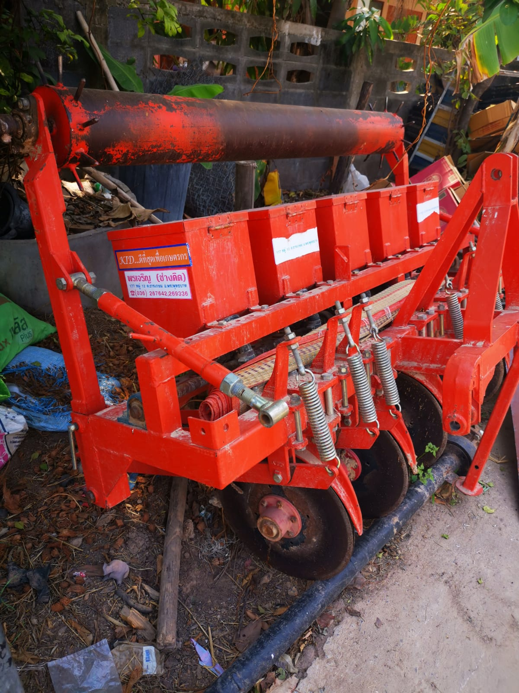

Organic Fertilizer Application
|
Interdisciplinary Design Projects / Winter-Spring 2020 |
 |
|---|
|
Interdisciplinary Design Projects / Winter-Spring 2020 |
|
|---|
Raitong Organics Farm in Sisaket, Thailand has been seeking assistance in reimagining their fertilizing process. Raitong is a leading organic farm in its area. Yet, they continue to struggle with an effective solution for their fertilizer application process. Currently, aging farmers carry heavy backpacks full of the organic fertilizer solution and can only apply during the night. Applying at night puts the farmers at risk of snakes and other dangers.
Currently, Raitong uses a tractor attachment to carry out all of its other planting processes. To prevent having to go through the path with the tractor a second after fertilizing the seeds, our team decided to develop a design to be added to the tractor attachment. As the fertilizing needs to occur immediately after planting from the seedboxes but before rolling out the soil, we will be clamping our mechanism to the frame between the two steps of the attachment, which is shown below.
Additionally, since this is an aerobic mixture which can only last up to 1-2 hours after being aerated, we are incorporating an aerating mechanism to the tank, which we hope to use an aquarium air pump for. In order to make it easy to maintain in a rural area, our group is exploring designs to keep the dispensing mechanism low-tech, such as dripper nozzles.